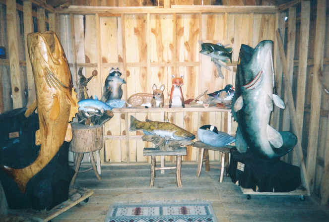
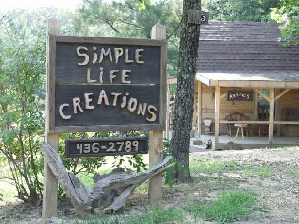

About
our Site

To the people of the public , who may be searching for a way to increase publicity over
the internet: My name is Kirk Patterson , of Murray, Kentucky. I am a wood carver here in
Murray. I spent the past two years beating my head in the ground , trying to market and
promote my art-work , without a web-site and publicity!!
When I met Thomas Davies.......... I was stunned to find out what I'd been doing wrong.
You cannot get into the " stream" of business without proper management,
promotion, and marketing!! Thomas Davies has the keen ability to do just this. His honest
approach to your needs are always made simple for us to understand. Thomas doesn't use
fancy web-terms that most web-managers/promoters use to make you feel like they are in
total control of your business.
Thomas Davies has the ability to take you deeper into your own business than you might
imagine. His attitude toward my art-carving business, for example, has taught me more
about people and out-look than I ever thought about until now. When Thomas promotes and
manages your web-site, he doesn't just take your money and leave you wondering if you'll
ever hear from him............ no .........
Thomas will stay on top of your web-management and make sure you are abreast of what is
going on with it!! Thomas and I have spent countless hours on the telephone, discussing
what the web-site is doing, and where it needs to go from point to point. I've known lots
of people in life and Thomas Davies is one of few people that when he tells you something
you can take it to the bank!
I was a new client , without a web-site, and Thomas was very adamant about getting to know
me , personally, before starting the web-site's construction. At the time, I didn't
understand....... but he began to explain that it enables him to better build the site
with the person rather than around the person! I've already gotten more responses from my
web-site than I could have ever gotten on my own!! I can personally tell you that you will
become a big part of your web-site when Thomas Davies becomes your web-site's
manager/promoter!! You see........
A web-site just suspended on the internet without being properly managed and promoted,
does you no good. It's the same principal as printing up all the advertisement adds you
can, but never mailing any of them!! If the people don't know " who you are "
then they won't know to care.
So........
I recommend Thomas Davies to take your web-site to places you didn't know existed before!
Sincerely, Kirk Patterson.
Personal
thanks to the web-builder: I would like to thank my web-builder/manager Thomas Davies. For
all of his dedicated time toward the constuction of my web-site! I feel sure if I had not
contacted Thomas........... I would not have a good web-site now. The time that he gave on
a personal level, made everything run smooth! No clutter talk or misguided attemts to
blind you from reality. Thomas kept every stage of the process simple and personal. I can
testify that Thomas doesn't just " win" your trust ............. he
"Earns" it!! Thank you again , Thomas................................... Kirk
Patterson ( wood-carver)
Here at "Simple
Life Creations" .we are only limited by our imagination.
Contact the
site builder
801-619-3632
moreinfo@simplelifecreations.com
